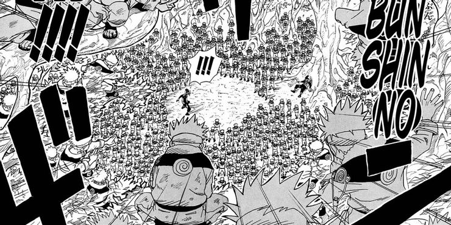

There are too many moves to list. Here are some of his most common moves:
- Shadow Clone Jutsu - The forbidden technique used over, and over again, Shadow Clone Jutsu is Naruto's bread and butter. It works by dividing up the user's chakra to create an identical copy. A ninja's chakra reserves are reflected in the number of clones that can be created. It was the first indicator of Naruto's power facing Mizuki when he threatened Iruka Umino. Creating a massive collection of clones, Naruto overpowered Mizuki. The Jutsu was also feared by Sasuke when they fought at the Valley of the End at the conclusion of the series. No matter the bind or the opponent, they are always faced with more than just a single Naruto.
